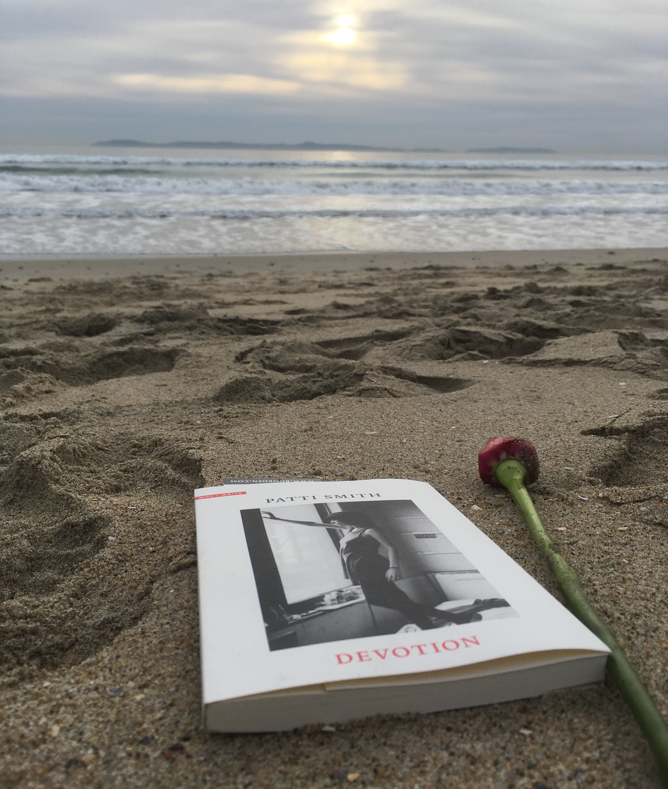

It’s the day I’m supposed to be camping in Joshua Tree, but I find myself driving up the coast instead, hunting for answers. Something is calling me north to Santa Barbara. It feels familiar, like a warm embrace from a distant friend, an aged habit that continues to linger, yet it remains entirely nameless. A ghost is whispering.
I arrive, park in front of my old apartment complex, and shuffle up the steps to the second floor. The chalky blue paint and the unused pool; unit 79, once mine and host of many firsts; unit 53, a dear friend’s, the place I received story, connection, and an unconditional heart. It was all still there, a figment of my memory unchanged by the hand of time. On the way out, I caught my reflection in the pane of a window. What had changed was me.
Nostalgia begins to flood and take form as I walk the streets. I picture my first night in town, a room full of laughter, innocence, and naivety, boys stumbling toward their precarious notions of manhood and adulthood, accompanied by a bottle of Skyy. They have each arrived at their own definitions, but what can be agreed upon is that it is a constant work in progress.
The deli comes into view and snaps me from my reverie. I move closer and scan the storefront, but they aren’t there: The bullet holes are gone, erased. I think about the fickleness of memory, the way it filters and edits, censors and distorts. I think about the future generation of students and about how May 23rd may be just another date to them, an issue best left to be made sense of by psychologists and politicians, a tragedy to be forgotten. I think about those who were there, those who heard the screams and the sirens, the gunshots and the silence, the fear and the helplessness; I think about those who couldn’t say goodbye, those who had to bear the gravity of the aftermath, the rage, the grief, the loss, the emptiness. For them the scars will remain forever etched, the memory forever lucid.
I go to the psychology building and think about how I am where I am. I think about the six-week summer meditation program, about Charles and Maria, Andre and Andrea, Mike and Kaita; I think about Alissa and the beliefs she instilled in me (energy is a non-limited resource!); I think about breathing and thinking, and I think about Naz. I think about the first time we meet in Applied Psychological Research, about the uniqueness of her full name, about mustering the courage to look into her dark eyes, those vast night skies of which I wanted to be the brightest and only star.
I think about the first time I take molly and the reassuring words of Maria that convinced me I was in good company. I think about sitting on someone’s couch filled with joy, energy, and boundless love. Naz and Charles are curled under my arms, blissed out, in another dimension; I’m alert and wide awake, tripping but not yet falling, viscerally aware of the preciousness of the situation. There are attempts at conversation, but the words are fleeting and fail to cohere. People are fucking in the other room. I soak it all in, and feel a deep sense of happiness. Smiles and laughter are the currency of the moment, and we were the lucky recipients.
I think about the end of the night, about talking with Charles at my kitchen table until five AM, about the drug problems he had, about how vulnerable he must have felt telling it all to me. I think about how lucky I was to have ended up with such a strange and endearing group of cosmic configurations. I think about how grateful I felt to be able to call these people my friends.
I go to Freebirds to order their nachos. Behind the counter, a look of recognition. It’s my mentee, a high school student I used to tutor. He flashes a grin at me and I wave to him. It’s been four years and he still remembers me. We talk and I learn he’s in community college now. His life is better and he is well. My ego springs forward and wants to claim his success, but I know better and laugh at my selfishness. I bring my tray to a table and sit. Pictures of famous people vacate the wall, none of which I know. I imagine what it’s like to have mine there one day, then take a bite. The nachos are still damn good.
Downtown, the coffee shop I used to frequent is gone. I walk around aimlessly past several adobe buildings and churches and wander into a familiar bookstore. A slim Patti Smith on the cover of a book catches me eye. I flip through the pages and find the word Devouement – or rather, it finds me. It brings to mind Mary Oliver and the lovely whistler, a sense of connection. I purchase the volume and slip it into my bag.
I make a final stop at the coast and stare out at the waves. Roses and rose petals litter the sand. It occurs to me that I have been chasing a trail left by my past selves, searching for a sense of home. I pause and ponder the distance between who I was then, and who I am now. The waves continue crashing, and I imagine myself riding them, surfing the familiar edges with a little more grace, a little more humility, a little more peace of mind. Thoughts of the future silently slip away as I ease into the moment. A ghost is whispering, telling me everything will be okay.
